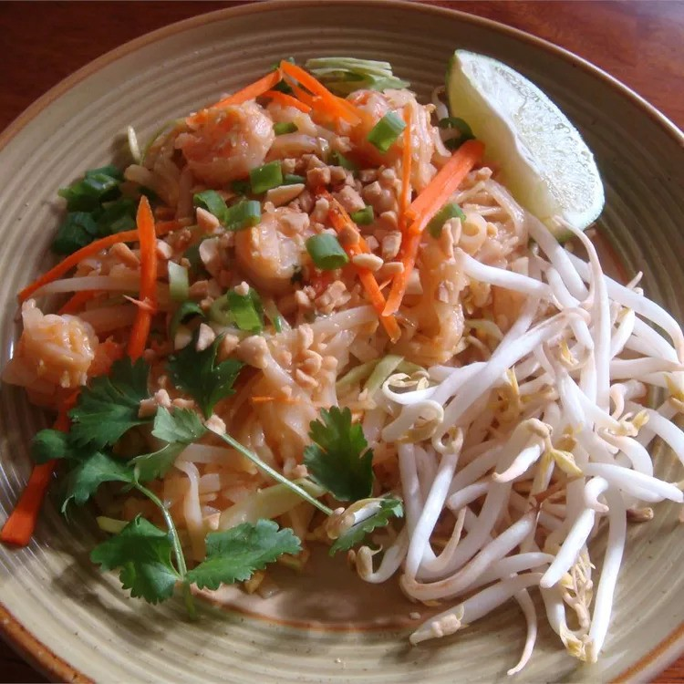

Pad Thai

Description
Taken from Allrecipes (submitted by Christine L):
This Sukhothai pad thai can be made with shrimp, chicken, or porck instead of
tofu. You can also look for items in the Asian foods section at your local grocery
store. Adjust the pad thai sauce ingredients to taste.
Ingredients
- ½ cup white sugar
- ½ cup distilled white vinegar
- ¼ cup soy sauce
- 2 tablespoons tamarind pulp
- 1 package dried rice noodles
- ½ cup vegetable oil
- 1½ teaspoons minced garlic
- 4 eggs
- 1 package firm tofu
- 1½ tablespoons white sugar
- 1½ teaspoons salt
- 1½ cups ground peanuts
- 1½ teaspoons ground, dried radish
- ½ cup chopped fresh chives
- 1 tablespoon paprika
- 2 cups fresh bean sprouts
- 1 lime, cut into wedges
Directions
- Prepare pad thai sauce in saucepan over medium heat.
- Soak rice noodles in cold water until soft; drain.
- Add garlic, egges, and tofu into a large skillet.
- Stir in pad thai sauce, peanuts, and ground radish.
- Remove from heat and serve with lime and bean sprouts
Original Recipe: Sukhothai Pad Thai